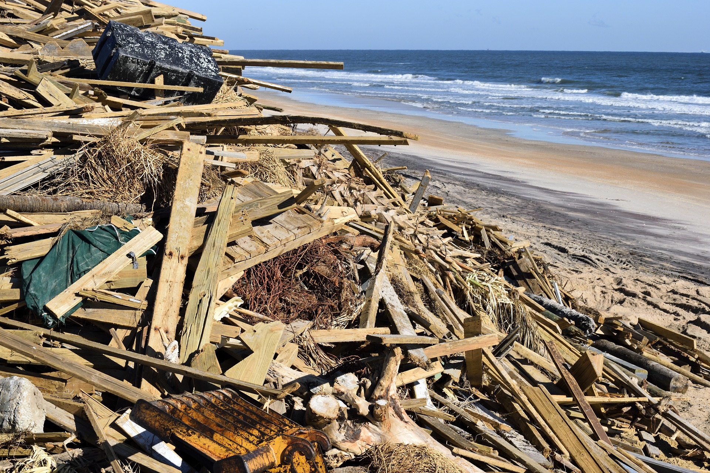
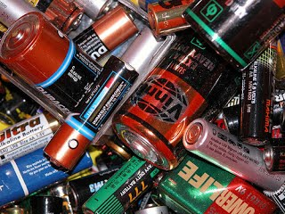
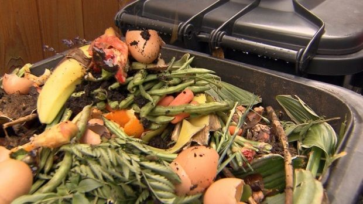
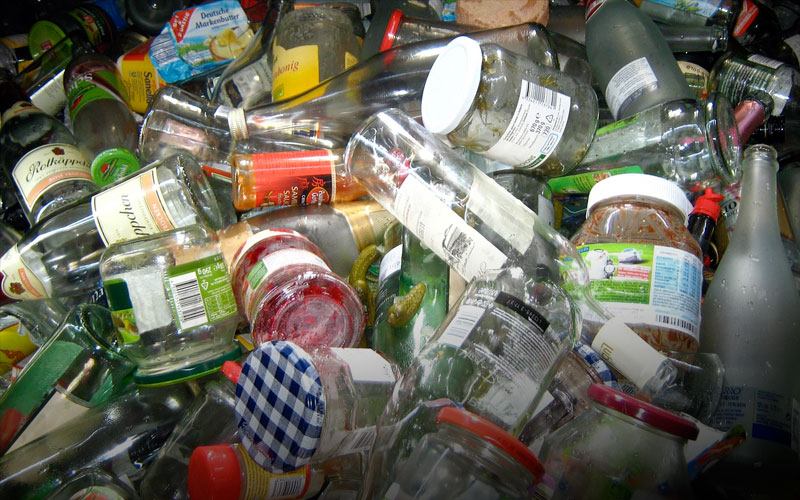

INFORMACION SOBRE EL TEMA
Bienvenido a la sección de información, aquí podrás hacer una retro alimentación del tema propuesto en el juego y además si deseas profundizar mas el tema, puedes aprender con la siguiente información:
¿QUE SON LOS RESIDUOS SOLIDOS?
Los residuos sólidos son objetos, materiales, sustancias o elementos sólidos que quedan del consumo o del uso de un bien en actividades domesticas, escolares, industriales y comerciales, algunos ejemplos de este tipo de residuos son un papel usado, una botella de plástico o de vidrio o un envase de cartón.
Clasificación de los residuos sólidos
Ordinarios: Estos residuos son generados durante la rutina diaria en hogares, escuelas, oficinas u hospitales.

Biodegradables: Estos residuos se caracterizan por poder desintegrarse o degradarse de forma rápida, convirtiéndose en otro tipo de materia orgánica. Ejemplos de este tipo de residuos son restos de comida, frutas y verduras.
.jpg)
Inertes: Estos residuos se caracterizan porque no se descomponen fácilmente en la naturaleza, sino que tardan bastante tiempo en descomponerse. Entre estos residuos encontramos el cartón o algunas clases de papel.
 Reciclables: Estos residuos pueden someterse a procesos que permiten que puedan ser utilizados nuevamente. Entre estos encontramos vidrios, telas, algunas clases de plásticos o papeles.
.jpg)
Peligrosos: Son aquellos residuos o desechos que por sus características corrosivas, reactivas, explosivas, toxicas, inflamables, infecciosas o radiactivas pueden causar riesgo a la salud humana y el ambiente.

Clasificación de los residuos sólidos en Orgánicos o Inorgánicos
Orgánicos: Aquí están todos los residuos Biodegradables.
 Inorgánicos: son residuos que por sus características químicas sufren una desintegración natural muy lenta. Muchos de estos residuos son reciclables por métodos complejos como las latas, algunos plásticos, vidrios o gomas. En otros casos su reciclaje o transformación no es posible, es el caso de las pilas, que son peligrosas y contaminantes.

WebGrafia
Información Basada en: Ecología Verde ¿Que son y como se clasifican los residuos sólidos? y Manual de gestión de residuos o desechos peligrosos Colombia